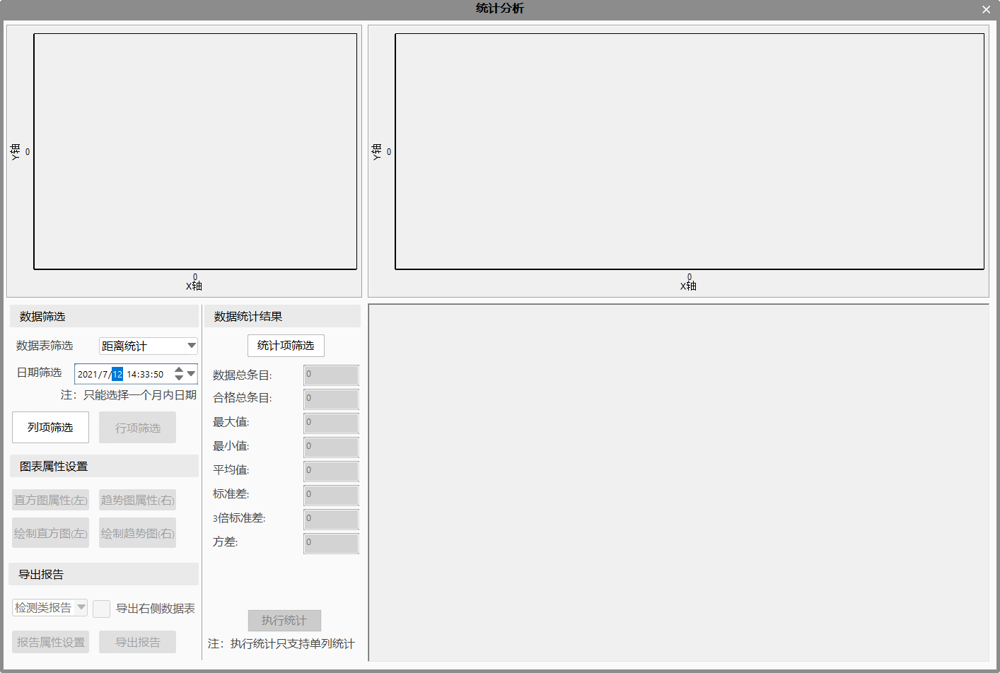

通过功能区-设置里的统计分析，对数据库里的数据进行相关的统计、分析，并导出报告。

数据筛选：选择数据表、筛选日期，确定数据；
列项筛选：筛选出需要的列项数据；
行项筛选：选中某个数据，根据数据筛选范围，对当前数据所在列进行筛选；
数据显示区域：
显示筛选后的数据；
右键-虚模式：可提高数据的加载速率；
右键-删除行：删除选中数据所在的整行数据；
绘图：可设置直方图、趋势图属性，并绘图；
X/Y轴名称：可修改轴名称；
X/Y轴数据源：可选择数据源（只有筛选出的列项才可作为轴的数据源）；
其它Y轴数据源（趋势图）：可追加、移除其它Y轴的数据源，该数据源与Y轴数据源不同；
X/Y轴最小值、最大值：设置轴的最小值、最大值，用于绘图显示；
数据统计：
统计项筛选：筛选保留需要统计的项；设置Cp/Cpk参数的规格上下限；
Cpk是根据参数的上下限(合格参数的可接受区间)，对制程水平进行量化，即制程力指数。它是一种表示制程水平高低的方便方法，其实质作用是反映制程合格率的高低。
计算公式：Min（（规格上限-平均值）/3/标准差，（平均值-规格下限）/3/标准差））
统计结果：数据总条目、合格总条目根据实际数据变化，不需要执行统计即可刷新；其它统计结果，需要点击执行统计；
导出报告：
报告类型：分检测类报告、对位类报告、激光类报告；根据实际项目类型进行选择；
导出右侧数据表：右侧数据表中的数据，可选择导出或不导出；
报告属性设置：可编辑报告的标题、项目名称、工位名称等信息；
导出报告：执行报告的导出；